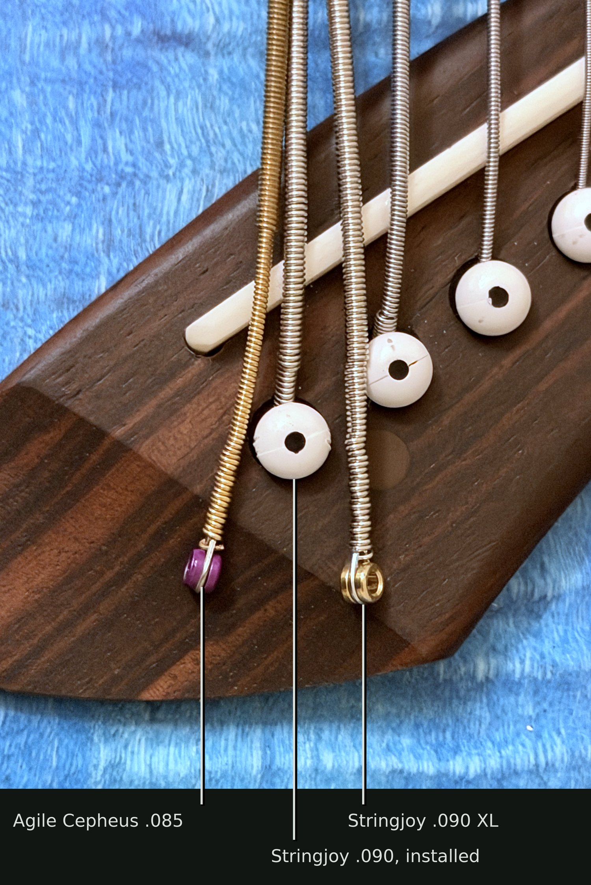
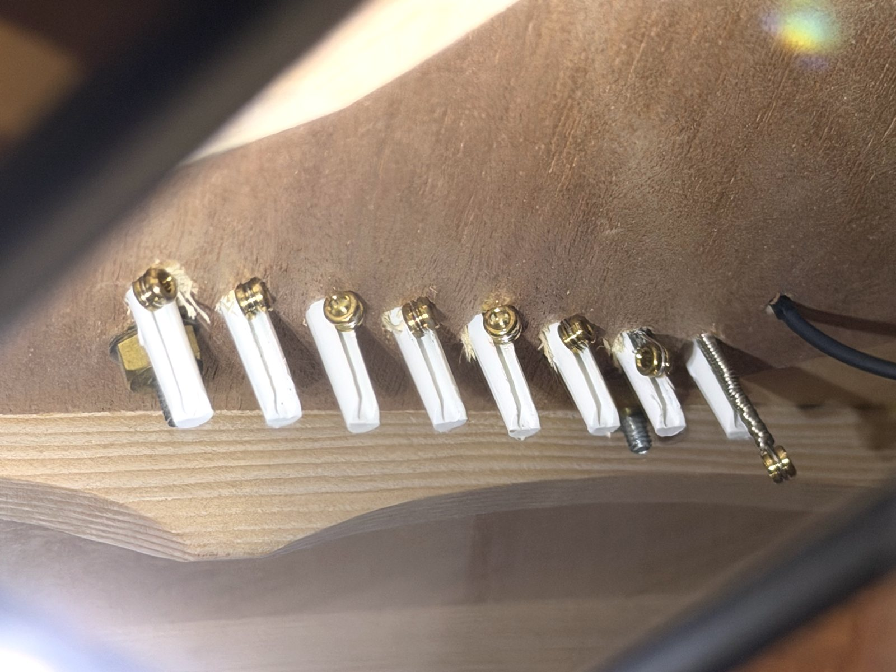
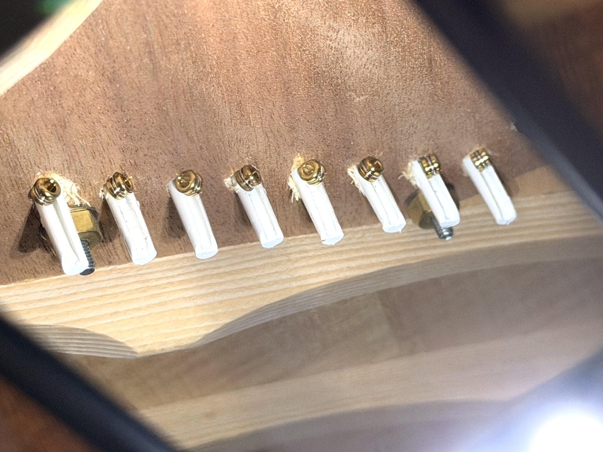
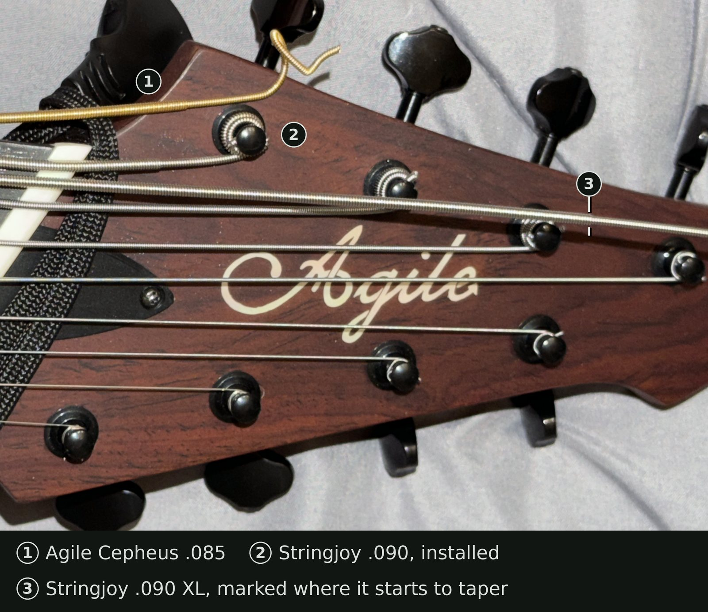

Stringjoy’s FAQ, under How long are your strings?, does mention that “Strings .080 and up have a very slight taper at the ball-end.” Here’s what that looks like on one of their .090 nickel-wound XLs.
It’s not as extreme a difference as featured on the Cepheus .085 that came with the Agile. It’s more similar to Kalium, but Stringjoy tapers closer to the end. (The offerings from the bygone juststrings.com didn’t taper at all, but they also capped out at .070.)
![Four heavy wound guitar strings lying side by side, ball ends at the bottom. Far left, on its white Stringjoy packet printed “90” and “SJ-NW090XL Extra Long Taper”, is the Stringjoy .090 nickel-wound XL, with a brass ball end; its winding narrows slightly just above the ball end. Next is a Kalium .076, whose winding narrows a little further up, then a JustStrings .070, which doesn’t narrow at all. Far right is a gold-colored Agile Cepheus .085 with a purple ball end, whose winding narrows much more noticeably near the ball end.](stringjoy-090-xl-vs-kalium-juststrings-cepheus-ball-end-taper-full.jpg)
A .090 non-XL uses the same tapering—the Stringjoys don’t differ on this end of the string. Switching from the Cepheus string, I found the effects this had on intonation, inharmonicity, and action to be negligible enough to not have to make any saddle modifications.


I did have to file down the bridge pin, to accommodate less tapered strings, however.




Stringjoy recommended the XL to me, but it doesn’t actually work on this instrument. The scale length for the 8th string is 30", but the tuning peg is near the nut, and cannot accommodate a non-tapered string thicker than about .070 (which is used here for the 7th string).
The original Cepheus string and non-XL Stringjoy taper at about the same 32" from the ball. The XL doesn’t taper until 35.5", as the FAQ notes.


Overall, I am happy with the non-XL, tapered Stringjoy string, and will continue buying more for the time being.
This will change if I ever find a company making 8th strings using stainless steel, though. That’s what I’ve used for all my other strings for the past two decades, since I discovered how much better stainless steel sounds, looks, and smells than any other guitar string material.
I don’t generally eat strings but I do assume stainless steel tastes better than nickel and bronze based on how bad they smell. As for feel, I’m ambivalent about its added tactility. It’s an easy win for the other four senses though.